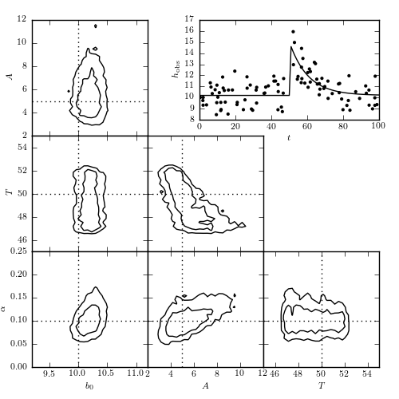

Matched Filter Burst Search¶
Figure 10.25
A matched filter search for a burst signal in time series data. A simulated data set generated from a model of the form y(t) = b0 for t < T and y = b0 + A exp[-a(t - T)] for t > T , with homoscedastic Gaussian errors with sigma = 2, is shown in the top-right panel. The posterior pdf for the four model parameters is determined using MCMC and shown in the other panels.
{kind=link}
@pickle_results: using precomputed results from 'matchedfilt_burst.pkl'
# Author: Jake VanderPlas
# License: BSD
# The figure produced by this code is published in the textbook
# "Statistics, Data Mining, and Machine Learning in Astronomy" (2013)
# For more information, see http://astroML.github.com
# To report a bug or issue, use the following forum:
# https://groups.google.com/forum/#!forum/astroml-general
import numpy as np
from matplotlib import pyplot as plt
# Hack to fix import issue in older versions of pymc
import scipy
import scipy.misc
scipy.derivative = scipy.misc.derivative
import pymc
from astroML.plotting.mcmc import plot_mcmc
from astroML.decorators import pickle_results
#----------------------------------------------------------------------
# This function adjusts matplotlib settings for a uniform feel in the textbook.
# Note that with usetex=True, fonts are rendered with LaTeX. This may
# result in an error if LaTeX is not installed on your system. In that case,
# you can set usetex to False.
from astroML.plotting import setup_text_plots
setup_text_plots(fontsize=8, usetex=True)
#----------------------------------------------------------------------
# Set up toy dataset
def burst(t, b0, A, alpha, T):
"""Burst model"""
y = np.empty(t.shape)
y.fill(b0)
mask = (t >= T)
y[mask] += A * np.exp(-alpha * (t[mask] - T))
return y
np.random.seed(0)
N = 100
b0_true = 10
A_true = 5
alpha_true = 0.1
T_true = 50
sigma = 1.0
t = 100 * np.random.random(N)
y_true = burst(t, b0_true, A_true, alpha_true, T_true)
y_obs = np.random.normal(y_true, sigma)
#----------------------------------------------------------------------
# Set up MCMC sampling
b0 = pymc.Uniform('b0', 0, 50, value=50 * np.random.random())
A = pymc.Uniform('A', 0, 50, value=50 * np.random.random())
T = pymc.Uniform('T', 0, 100, value=100 * np.random.random())
log_alpha = pymc.Uniform('log_alpha', -10, 10, value=0)
# uniform prior on log(alpha)
@pymc.deterministic
def alpha(log_alpha=log_alpha):
return np.exp(log_alpha)
@pymc.deterministic
def y_model(t=t, b0=b0, A=A, alpha=alpha, T=T):
return burst(t, b0, A, alpha, T)
y = pymc.Normal('y', mu=y_model, tau=sigma ** -2, observed=True, value=y_obs)
model = dict(b0=b0, A=A, T=T, log_alpha=log_alpha,
alpha=alpha, y_model=y_model, y=y)
#----------------------------------------------------------------------
# Run the MCMC sampling
@pickle_results('matchedfilt_burst.pkl')
def compute_MCMC_results(niter=25000, burn=4000):
S = pymc.MCMC(model)
S.sample(iter=niter, burn=burn)
traces = [S.trace(s)[:] for s in ['b0', 'A', 'T', 'alpha']]
M = pymc.MAP(model)
M.fit()
fit_vals = (M.b0.value, M.A.value, M.alpha.value, M.T.value)
return traces, fit_vals
traces, fit_vals = compute_MCMC_results()
labels = ['$b_0$', '$A$', '$T$', r'$\alpha$']
limits = [(9.2, 11.2), (2, 12), (45, 55), (0.0, 0.25)]
true = [b0_true, A_true, T_true, alpha_true]
#------------------------------------------------------------
# Plot the results
fig = plt.figure(figsize=(5, 5))
fig.subplots_adjust(bottom=0.1, top=0.95,
left=0.1, right=0.95,
hspace=0.05, wspace=0.05)
# This function plots multiple panels with the traces
plot_mcmc(traces, labels=labels, limits=limits, true_values=true, fig=fig,
bins=30, colors='k')
# Plot the model fit
ax = fig.add_axes([0.5, 0.7, 0.45, 0.25])
t_fit = np.linspace(0, 100, 101)
y_fit = burst(t_fit, *fit_vals)
ax.scatter(t, y_obs, s=9, lw=0, c='k')
ax.plot(t_fit, y_fit, '-k')
ax.set_xlim(0, 100)
ax.set_xlabel('$t$')
ax.set_ylabel(r'$h_{\rm obs}$')
plt.show()